Retained UX Direction · 2026-05-30
Peak Chat Final Design Set
这份报告只保留已经收敛的 chat 方向：Header 只负责标题、source document 和刷新，Input 负责下一次运行的 mode/model/role/context，Message 负责回答和当下产物，Conversation Index 负责跨会话内容的搜索、筛选和跳转。
Header
只放标题、source document 入口和刷新；不再放右侧 toolbar。
Input
Chat · Auto model · 0 ctx 是一个 run chip；role 也从这里选择。
Message
正文保持文档阅读感；底部最多露出 1-2 个 suggested next。
Index
右侧是 topics、artifacts、messages 的导航索引，不是消息流水账。
1. Clean Header
Header 单独收敛：不放 role，不放 resources，不放外部 ChatGPT/Gemini，也不再放右侧 Search/Index/Pop out。标题旁只保留 source document 和刷新。
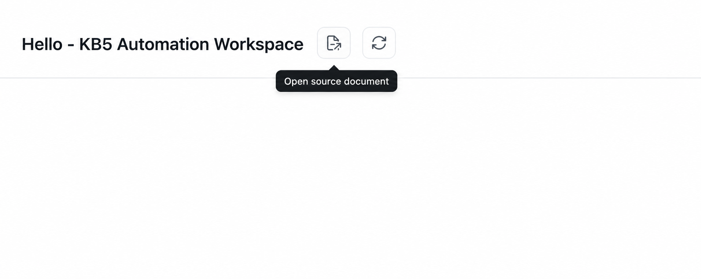
Open source document 和 refresh。右侧不再放 toolbar；Search/Index 由右侧 Conversation Index 自身承担，Pop out 暂不作为主入口。
2. Input Run Chip
保留原来的单 capsule 设计，同时把 role 选择合并进它的 popover。用户下一次要怎么跑，由输入区决定。
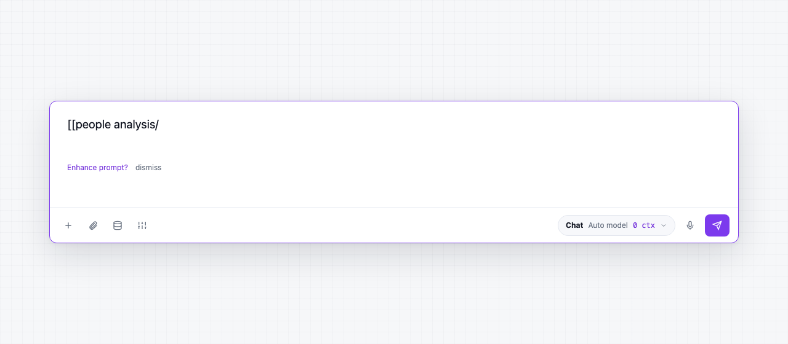
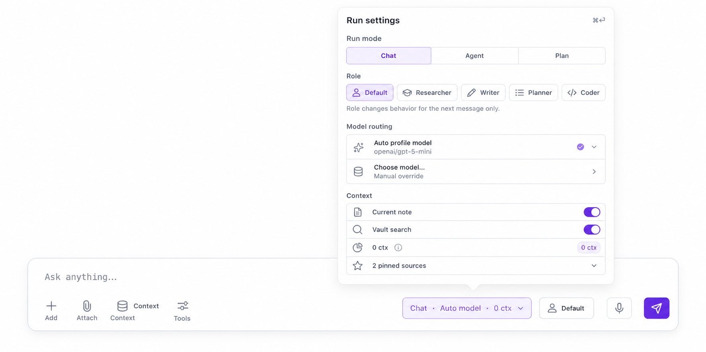
Chat · Auto model · 0 ctx 保持一个 chip；Role 作为 next-message behavior 在 popover 内选择。
Role/persona 是下一次运行的行为参数，所以放在 input run chip 的 popover 内。
Model、mode、context、role 都是 run identity；不要拆成 header 上的多个 icon。
3. Conversation Index
右侧保留四个 tab。它的本质是会话导航和产物索引：能搜索、筛选、跳转、打开 artifact。
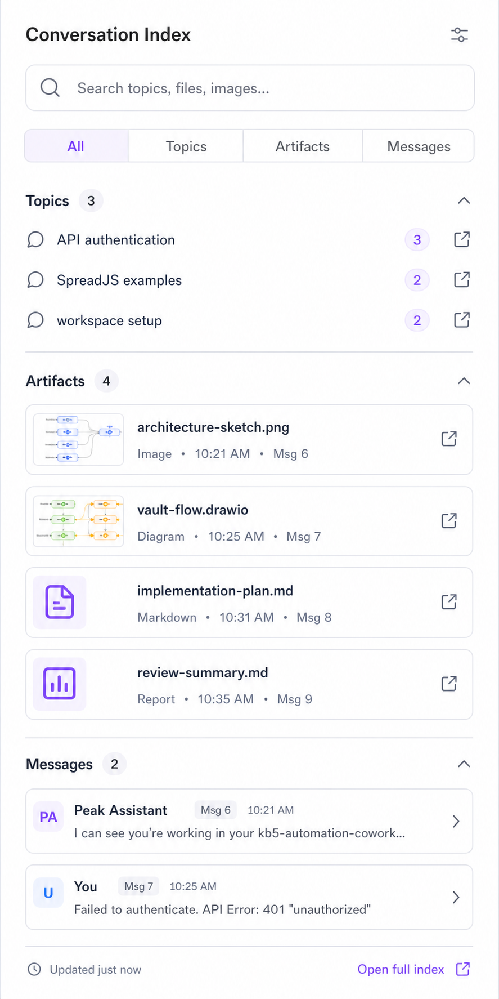
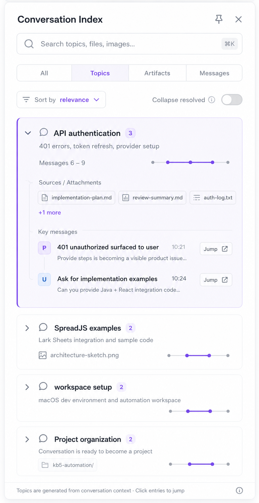
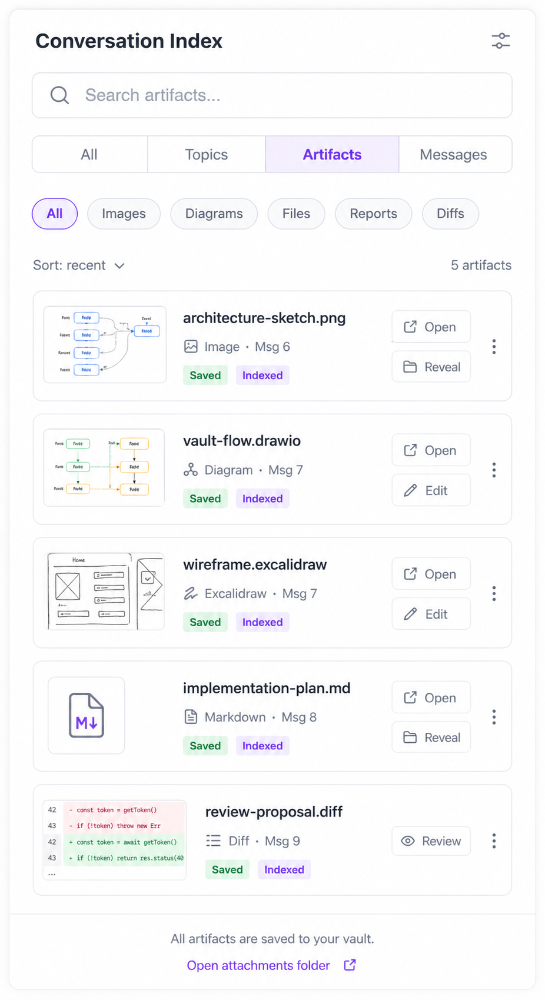
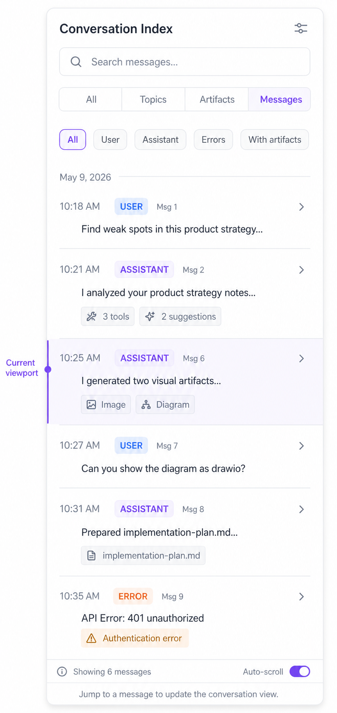
4. Message Styles
Message 需要同时支持普通回答、图片/diagram 产物、文件/report/diff 产物，但不能变成 dashboard。
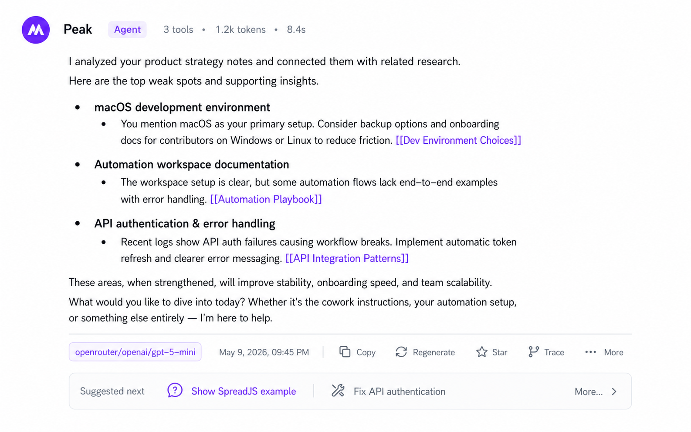
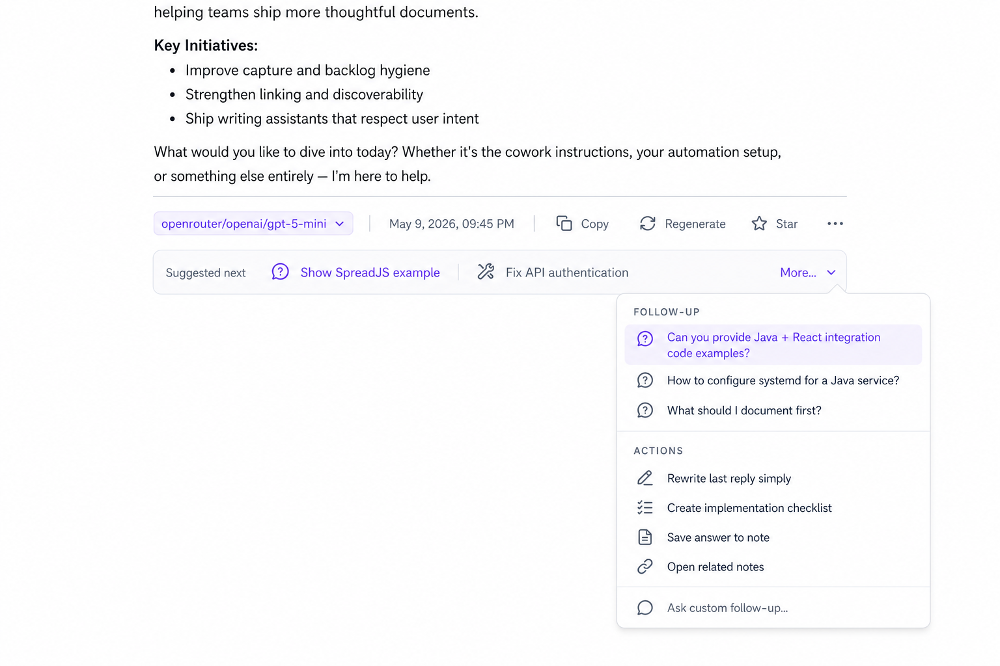
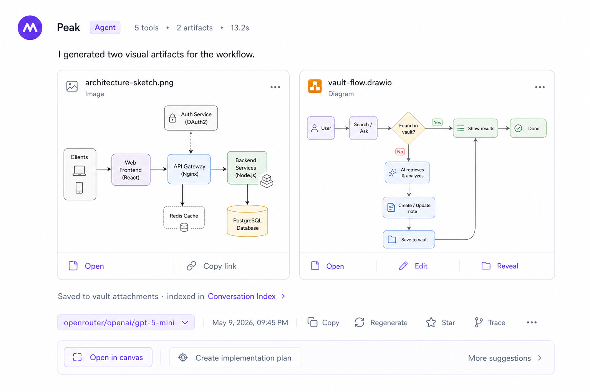
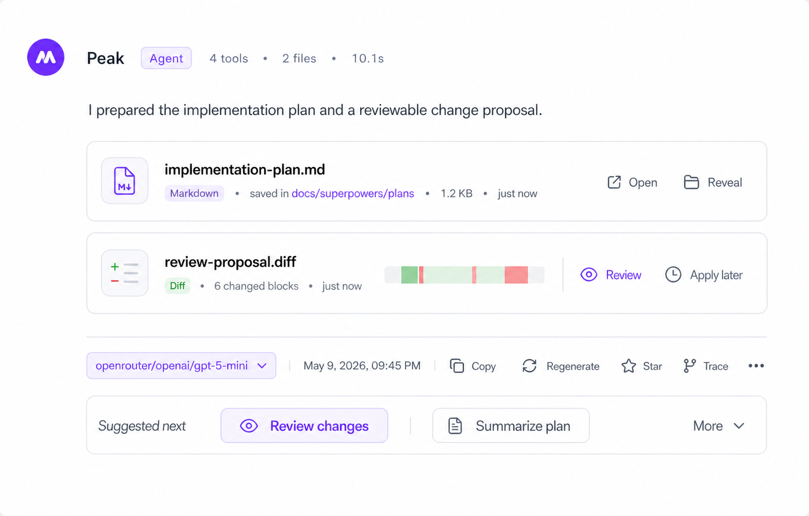
5. Final Rules
这些是实现时要遵守的取舍边界。
Keep
- Header: title + source document + refresh。
- Input: run chip owns mode/model/role/context。
- Topics: accordion + position bar + sources/attachments。
- Messages: quiet body + one suggested next strip。
- Artifacts: inline in message, indexed in sidebar。
Remove / Avoid
- Header role/brain/persona icon。
- Header resources/library icon。
- Open in ChatGPT/Gemini buttons。
- Header Search / Index / Pop out toolbar。
- Visible Jump buttons in Topics。
- Default local follow-up composer under every answer。
- Always-visible TUNE / FOLLOW-UP / ACTIONS rows。